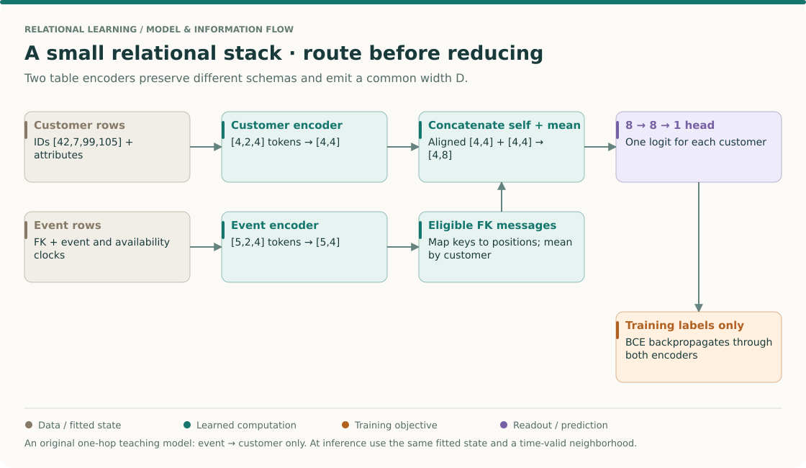
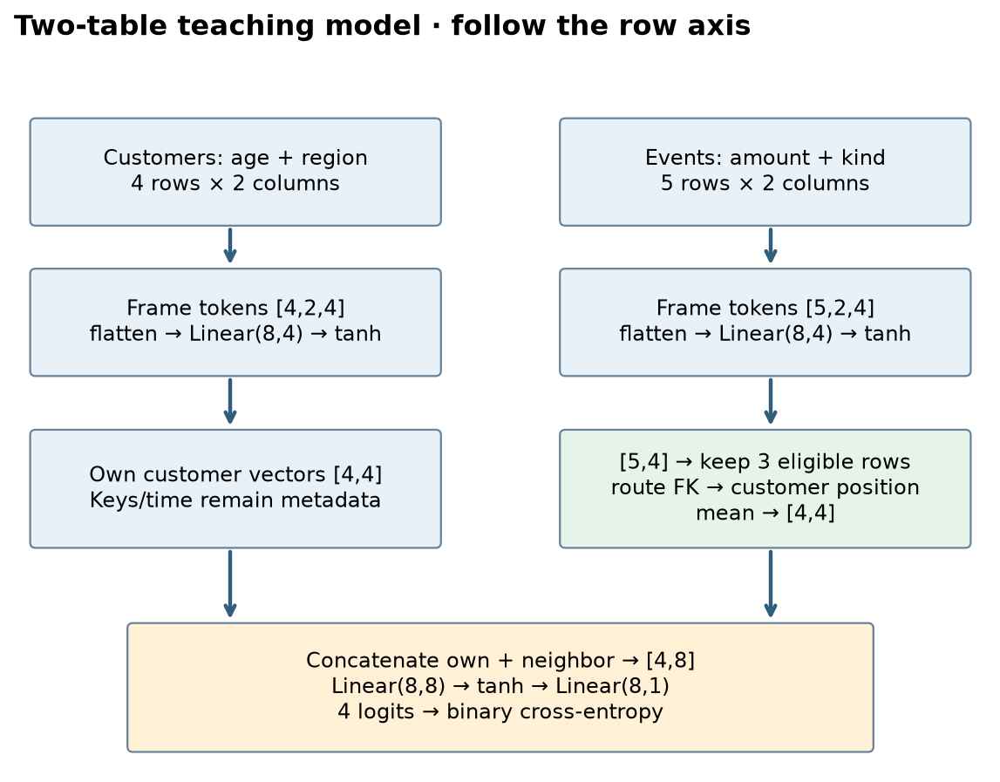
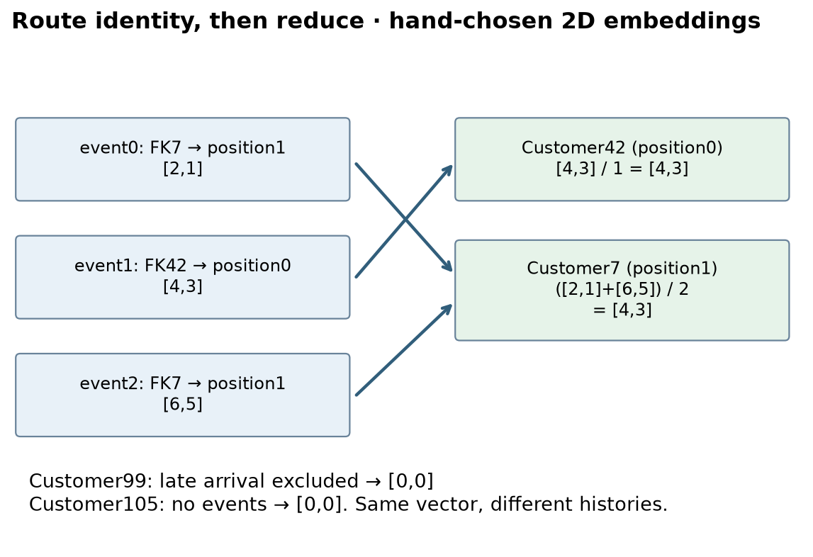
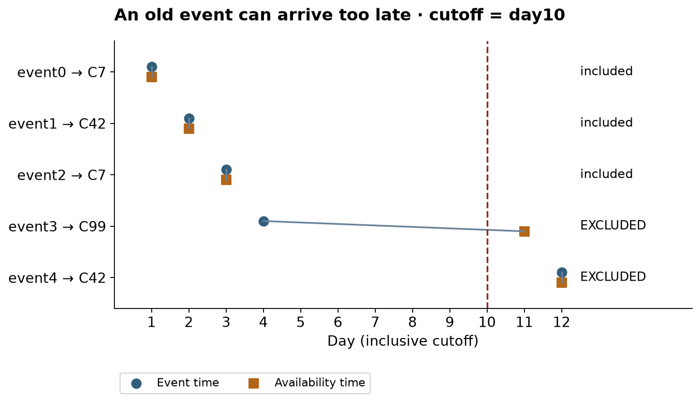
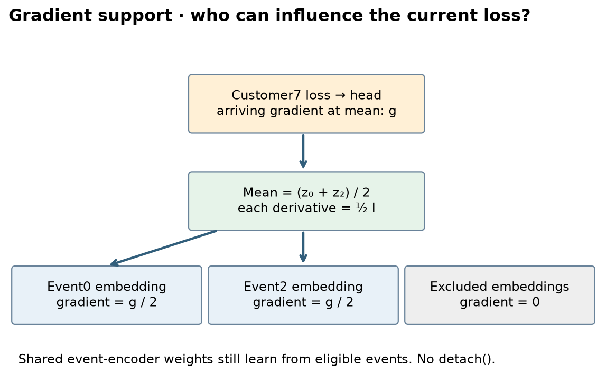

Year2 · Quarter4 · Lesson076
Encoder → predictor: the relational stack
Encode records → route eligible messages → predict → differentiate.
Start with retrieval¶
Before reading, explain these three things without looking them up: what state a row encoder fits, why a foreign key is not automatically a row number, and why an event timestamp alone cannot prove information was available. If one is unclear, write your current guess. Return to it after the worked example.
Your tangible win. Build a complete two-table predictor and account for every input coordinate, edge and gradient. You will connect the row encoder from Lesson 75 to another table, rather than treating relational learning as an unexplained box. This is the architecture preview specified by the curriculum. The core lab takes about an hour; the historical benchmark replay is a separate, longer track.
THE BIG PICTURE · LESSON 076
Build on what you know. Lesson 75 ended at one vector per record. Lesson 55 supplied point-in-time discipline. Combining these requires two explicit operations: connect identities correctly and remove information that was not available at prediction time.
The next question. Lesson 77 asks what the relational route can preserve that a chosen flattened summary loses. Lesson 78 turns this concrete one-hop stack into the message-passing vocabulary.
Open the SSL → relational → graph model map · Work the cold retrieval first, then spend 15–20 minutes tracing this overview before the detailed mechanism and lab.
Follow one customer from rows to loss¶

Read for the boundary between modules¶
Revisit PyTorch Frame Figure 1, then the task and graph setup in RelBench. The small stack here is a teaching construction. Its purpose is to make the row-encoder → relation-aggregation → prediction interface visible before inspecting the larger historical model later in the lesson.
Work a complete one-hop prediction¶
- Encode each table independently. A customer vector and an event vector can both have width D=4 while using different statistics, vocabularies and weights. Equal width makes messages composable; it does not make the two schemas equivalent.
- Resolve keys to positions. If customers are stored as [42,7,99,105], an event with FK=7 routes to tensor position 1. Keep this mapping beside the tensors. A valid tensor shape cannot detect a mistaken identity mapping.
- Apply the availability rule. An event dated before prediction time can still be unavailable if it was recorded later. Test the event and availability clocks against the declared cutoff before aggregating. The exact inequality belongs to the task contract.
- Reduce only eligible messages. In a two-coordinate hand example, customer 7 receives [2,4] and [6,0]. Its mean neighbor message is [4,2]. If the second event is unavailable, the message becomes [2,4], not [1,2]; the denominator counts eligible events only.
- Join representations and predict. If its own state is [1,3], concatenate [1,3,4,2]. For a toy head w=[1,0,−0.5,0] with zero bias, the logit is −1 and sigmoid is about 0.269. This illustrative head is smaller than the actual nonlinear notebook head, but exposes the same alignment requirement.
- Trace the gradient backward. Customer supervision changes the prediction head, then both the own-row path and eligible event path. An event need not have its own target to receive a learning signal through a supervised customer's prediction.
Predict: what changes if an unrelated customer's event is modified?
In this one-hop model it must not change the first customer's prediction, provided fitted preprocessing is held fixed. A change would suggest incorrect routing, reduction across the whole batch, or unintended shared query statistics.
Your intermediate artifact: record one prediction's customer ID, eligible event IDs, encoded messages, reducer denominator and logit. This trace is a stronger debugging artifact than a training-loss plot alone.
1. Why the row encoder needs a neighbor¶
In plain terms. A customer row describes the customer. Purchase rows describe what the customer did. A relational predictor needs a controlled way to bring those descriptions together.
A table contains records with named columns. A primary key, or PK, identifies a record uniquely within a table. A foreign key, or FK, points to a primary key in another table. These keys define relationships. They do not say that larger IDs mean greater amounts or more important customers.
A row encoder is a learned function that maps the descriptive features of one record to a vector of numbers. A vector coordinate has no predetermined business meaning; training adjusts coordinates to support the prediction task. Message passing lets one record receive information from related records. An aggregation combines a variable number of incoming vectors into one fixed-width vector. A head maps the resulting representation to the task's output.
PyTorch Frame separates typed input conversion, column encoding, within-row interaction and readout. Its row representations can feed a graph model. Read the primary paper's Figure 1 and §3 with one question: where does within-row computation end? That boundary is where this lesson begins.
The distinction that matters. Mixing age and region within a customer row is column interaction. Combining that customer's purchase records is cross-row message passing. A very sophisticated row encoder still cannot use a purchase it never receives.
2. Model architecture: a complete, small RDL stack¶
RDL means relational deep learning: learning representations and predictions using records and their relationships. Our pictured variant has two table-specific encoders, one direction of communication, one aggregation step, and a binary prediction head. One hop means a message traverses one relationship. There is no recurrent update and no hidden second hop.

Read the shapes. [N,C,d] means N rows, C columns per row, and d encoded coordinates per column. The customer feature table has 4 rows and 2 columns. With d=4, its tokens are [4,2,4]. Flattening the last two axes gives [4,8]. A learned linear projection and a bounded activation, tanh, produce [4,4] customer vectors. The event encoder follows the same pattern for 5 event rows, producing [5,4] vectors. The encoders have separate weights even though these example schemas have the same number of columns.
Why separate encoders? A region category and a purchase kind are different vocabularies. A customer's age and an event's amount have different statistics. The shared contract is the output width D=4, not shared feature semantics. Another encoder could replace either one if it preserves its row identities, output width, device, numeric type and gradient connection.
The final connection. Aggregating events creates [4,4] neighbor vectors aligned to customers. Concatenation places each customer's own four coordinates beside its four neighbor coordinates, producing [4,8]. The head applies a learned 8→8 transformation, tanh, and an 8→1 transformation. Removing the singleton last axis returns four logits, shape [4]. A logit is an unconstrained score; the sigmoid function converts it to a number between zero and one. That number is not automatically calibrated.
Scope check. This is a complete teaching model, not a new architecture paper or the RelBench benchmark model. Its actual PyTorch Frame encoders are the API under study. Key routing, temporal eligibility, reduction, composition and training are visible in the notebook. The historical RelBench model and trainer are shown separately after EXIT.
3. Identity comes before arithmetic¶
Worked example. The customer IDs, in their current table order, are [42, 7, 99, 105]. The event foreign keys are [7, 42, 7, 99, 42]. Therefore the destination row positions are [1, 0, 1, 2, 0]. The first event belongs to customer 7, which occupies row position 1.

A graph node is a record. A directed edge specifies which record sends to which receiver. Here an event sends to its customer. A relationship in a database does not force a graph's communication direction: a model designer chooses it. A reverse edge would let a customer send to an event, and a second hop could then carry information farther. This lab deliberately has neither.
Failure case. Using the FK value 42 directly as a tensor index is wrong for a four-row table. Subtracting the smallest ID is still wrong because IDs are not contiguous. Sorting customers without updating destinations silently routes messages to the wrong people. Both tensors may retain perfectly valid shapes.
A stronger check than shape. Permute customer rows, rebuild the ID-to-position mapping, and verify that predictions move with customer identities. Independently permute events and their edge metadata. A mean reduction should give the same prediction, up to floating-point roundoff. These are equivariance and invariance checks: an output ordering changes appropriately under the first transformation, while numeric outputs stay fixed under the second.
Check yourself: customer order becomes [99,42,105,7]. Where does FK 7 go?
Position 3. The entity remains customer 7. Position is a property of the current tensor layout, not the database identity.
4. Time decides whether an edge can carry information¶
In plain terms. An old event recorded tomorrow was not available for today's prediction.
A prediction cutoff is the moment at which the model must make its decision. An event time records when something happened. An availability time records when the feature became accessible to the predictor. They can differ because records arrive late. The lab uses integer days and an inclusive boundary: both times must be less than or equal to day 10. In a real application, the boundary convention must match the task.
Our first three events are visible. The fourth occurred on day 4 but became available on day 11, so it is excluded. The fifth occurred and arrived on day 12, so it is also excluded. The corresponding mask is [true,true,true,false,false].

Two distinct leakage paths. Filtering edges prevents an unavailable event vector from directly reaching a customer. It does not prevent unavailable raw values from influencing a fitted mean, vocabulary or normalization statistic. The lab therefore fits event materialization on eligible rows, then converts all rows using that frozen state. Changing only excluded amounts must leave both fitted state and predictions unchanged.
Why convert excluded rows at all? This small fixture keeps all five rows to make masking and gradient checks inspectable. Its encoder is row-local. A batch-dependent normalization across all events would reintroduce influence before masking; it would require a different treatment. At scale, filter or sample eligible rows before encoding them.
What is held fixed? Customer attributes are assumed already available at day 10. The fixture has one snapshot and no held-out data. For a predictive benchmark, fit data-dependent state only on the training information allowed by the protocol, then enforce each query's own cutoff. A single global mask is insufficient when queries have different times.
Check yourself: is event_day≤cutoff enough?
No. It admits late-arriving records. In this fixture the day-4 event is unavailable until day 11. Feature revisions and label availability also need their own audit in a real task.
5. Compute one hop, coordinate by coordinate¶
Worked example. To expose the arithmetic, temporarily use two-dimensional illustrative event embeddings. These are hand-chosen values, not the trained width-4 encoder output. The first three events encode as [2,1], [4,3], and [6,5]. Their destination positions are [1,0,1].
Customer 42 receives [4,3], so its mean is [4,3]. Customer 7 receives two vectors. Add them coordinatewise to get [8,6], then divide by two to get [4,3]. Customers 99 and 105 have no eligible events. Their neighbor vectors are explicitly defined as [0,0].
The general rule. Write z_j for event j's vector and N(i,t) for the set of events linked to customer i and available at cutoff t. The count n_i is the number of events in that set. The neighbor vector is:
m_i = sum(z_j for j in N(i,t)) / max(n_i, 1)
The sum over an empty set is a zero vector. The denominator guard makes the empty case finite; it does not invent a neighbor. The implementation accumulates messages using indexed addition. Repeated destinations must add their contributions. Assigning values directly into destination slots would overwrite earlier events and teach the wrong operation.
A mean loses information. One [4,3] and the mean of [2,1] plus [6,5] collide. Both produce [4,3] despite different event counts. A sum produces [4,3] versus [8,6], preserving this particular distinction but making scale depend on count. Concatenating the count is another design option. Neither choice is universally superior. Our head receives the mean but not the count; the returned count is an audit artifact.
An empty-neighborhood collision. No events and a real event whose embedding is exactly zero both give a zero aggregate. Own-row features still let the head make a prediction, but cannot recover the missing neighborhood distinction by themselves. A learned empty token or an explicit count could expose it.
Why the dense oracle helps. Build an incidence matrix A with one column per eligible event and one row per customer. Entry A[i,j]=1 when event j routes to customer i, otherwise zero. Multiplying A by the event matrix sums each customer's messages. Dividing each row by its count gives an independent expression for the same result. The verifier compares both values and derivatives to this oracle, then compares the mean primitive to a configured PyG SAGEConv with identity neighbor weights and no root contribution.
Scope check. The primitive comparison verifies this reduction. It does not establish equivalence between the complete toy predictor and GraphSAGE or RelBench.
6. The head sends a learning signal back across the join¶
In plain terms. A prediction error can change how a purchase is encoded, even though the prediction is attached to the customer.
Training objective. A binary target is 0 or 1. Binary cross-entropy penalizes confident wrong predictions. The notebook uses the numerically stable logits form, binary_cross_entropy_with_logits, without first applying sigmoid. The optimizer, Adam, adjusts learned parameters using the derivative of the loss. A gradient tells us how a small parameter change would change that loss locally.

Trace the derivative. If customer 7 has two eligible events, each receives one half of the gradient arriving at their mean vector. The head and event encoder contribute further derivatives. With only one eligible event, that event receives the full aggregate derivative. Excluded event embeddings receive zero gradient through this path. They do not receive a message simply because they were materialized.
An important distinction. Encoder weights are shared across events within a table. Training on visible events can change how an excluded event would be encoded in a later forward pass. That does not mean the excluded event supplied information to the current loss. The verifier checks gradient support on individual event embeddings, not an incorrect requirement that their shared weights never change.
The accidental break. Calling detach(), converting learned vectors to NumPy, or saving fixed embeddings before fitting only the head prevents loss derivatives from reaching upstream encoders. Frozen features can be an intentional baseline. They are not end-to-end training. The lab asserts nonzero finite gradients in both encoders and in the head.
7. Execute the diagnostic and interpret it honestly¶
Before running. Predict whether the model can reduce loss on four labeled rows, and whether that establishes anything about unseen customers. The labels are arbitrary fixture labels, never included in feature materialization. We fix seed 76, use full-batch Adam with learning rate 0.03, and run 100 updates. No validation selection takes place.
Author-reference evidence — measured locally, not your current kernel output.
| Measurement | Observed | Interpretation |
|---|---|---|
| First / final training loss | 0.681352 / 0.000726 | Four-row overfit diagnostic only |
| Counts in customer order [42,7,99,105] | [1, 2, 0, 0] | Late and future events excluded |
| Customer / event row vectors | [4,4] / [5,4] | Actual PyTorch Frame path |
| Concatenated / logit shape | [4,8] / [4] | One prediction per customer |
| PyG mean primitive maximum error | 0.0e+00 | Primitive forward parity |
| Key/time/gradient/permutation checks | PASS | See saved verifier report |
| Historical RelBench training | NOT_RUN | No measured paper AUROC |
Held fixed / varied / measured. Architecture, data and labels stay fixed. The optimizer varies the weights. We measure the loss on the same four rows used to fit them. Loss reduction confirms an executable differentiable path with enough capacity to fit this fixture. A constant-label predictor, a tiny head-only model or memorization may also fit tiny data. This diagnostic does not measure generalization, relational advantage or paper reproducibility.
What the tests contribute. Loss alone could fall with misrouted edges. Key remapping tests catch that. Loss alone could fall with future leakage. The excluded-value intervention catches that. Loss alone could fall with frozen encoders. Gradient checks catch that. A useful verification suite tests the behavior the lesson claims, not merely whether Python finished.
8. Your lab: three load-bearing repairs¶
Open the companion notebook. It contains the complete architecture and training loop in readable cells. Implement three functions: key_positions, eligible_events, and mean_messages. Each is called by the live pipeline. Each has an immediate CHECK that fails for a meaningful mistake. Complete the functions before consulting the solution notebook.
EXIT deliverable. Export a JSON trace with tensor shapes, eligible counts, seed and measured loss. Submit it with a short explanation of why customer 99 has no eligible events, why customer 7 receives half-gradients per event, and what evidence would be necessary to claim a relational performance benefit. Re-run after permuting customer rows and remapping keys. Predict the outcome before executing.
Retrieval tomorrow. Draw the stack from memory. Label where a vocabulary is fitted, where a PK becomes a tensor index, where time removes an edge, and where the task loss enters. Ask the teaching agent to quiz you on the weakest step; paste your EXIT explanation for feedback.
9. Historical reproduction: from this skeleton to RelBench¶
The optional target is RelBench v1, Table 6, rel-f1 / driver-dnf. The published test AUROC mean is 72.62%, over five runs. AUROC measures ranking across positive and negative examples; it is not threshold accuracy. The paper uses two GNN layers, width 128, summation, batch size 512, learning rate 0.005 and up to 10 epochs for this task. See the primary experiment and Appendix B.
The archived code is the publication-day revision 5894184f3d1b2432feb9a208a8aaf18b106fbdf4. Its complete model, heterogeneous encoder, temporal encoder, GraphSAGE blocks and training script appear after EXIT in the notebook. It adds learned relative-time features and temporal neighborhood sampling. It uses validation AUROC to select the checkpoint before final test evaluation. The toy model's mean and shallow head cannot stand in for this experiment.
A concrete mismatch to diagnose. The released loader calculates fanouts as [128,64] when asked for 128 neighbors and two layers. The paper describes a maximum of 128 neighbors per foreign key. The replay preserves the released code and records that distinction. We choose seeds 0–4; the precise published seed list was not identified. Source identity, environment pins, text-model download, dataset versions and protocol differences belong in the reproduction contract.
Scope check. Full benchmark training is NOT_RUN. This WSL machine has an ARM CPU environment without the historical temporal sampling stack. The local preflight records the blocker rather than running a modified current implementation. CLI, isolated Colab and Modal operators accompany the full archived code. Their availability is not evidence of completed cloud execution or paper-result parity. Consult the contract for the exact remaining gaps and run commands.
The next conceptual step. Curriculum L077 tests what rows-only information cannot express. L078 develops message passing itself. In later RDL work this same separation—encode records, exchange eligible messages, predict a target—will let you change one component while keeping the experiment interpretable.